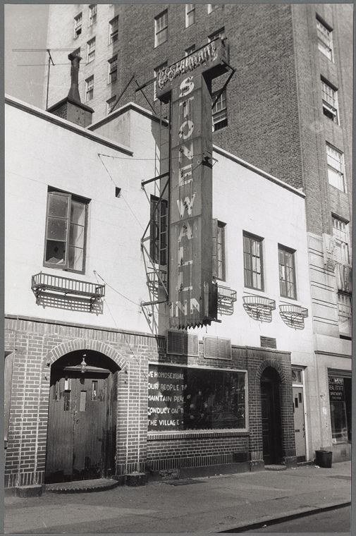
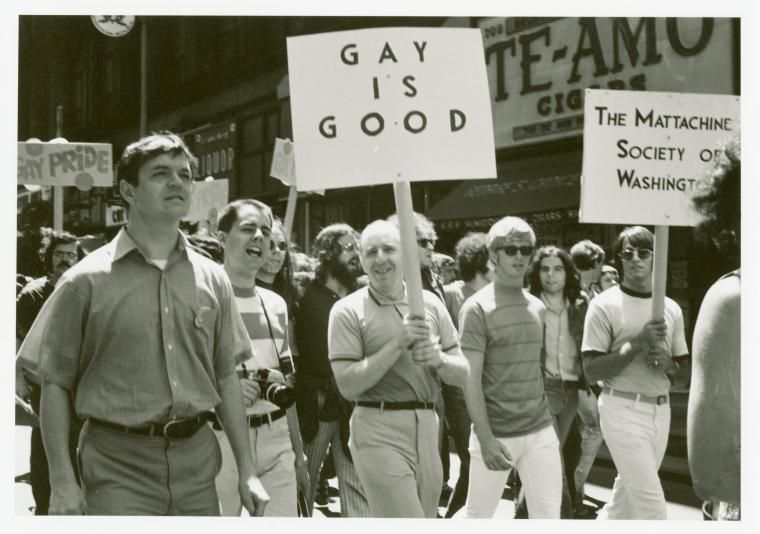
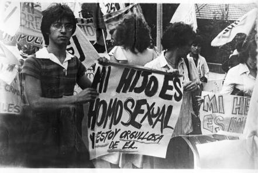

Orgullo: Las Marchas de la Comunidad LGBT+
Las marchas del orgullo LGBT+ tienen su origen en los disturbios de Stonewall, ocurridos el 28 de junio de 1969 en Nueva York, cuando miembros de la comunidad se levantaron contra la represión policial. Este hecho marcó un punto de inflexión en la lucha por los derechos y dio paso a las primeras marchas del orgullo en 1970, organizadas como actos de memoria, protesta y visibilidad.

Con el paso de los años, estas marchas se extendieron a distintas ciudades del mundo, convirtiéndose en espacios de reivindicación, celebración y resistencia. En ellas, la comunidad LGBT+ ha exigido igualdad legal, respeto social y el reconocimiento de su diversidad, al mismo tiempo que honra la historia de lucha que las hizo posibles.

En América Latina, las marchas del orgullo comenzaron a consolidarse a partir de las décadas de 1980 y 1990, creciendo en participación y visibilidad. Ciudades como Ciudad de México, São Paulo y Buenos Aires han llegado a albergar algunas de las marchas más grandes del mundo, reflejando tanto avances en derechos como la persistencia de desigualdades y desafíos sociales. Estas movilizaciones han sido clave para impulsar cambios legales y culturales en la región.

Hoy, el mes de junio se reconoce internacionalmente como el Mes del Orgullo LGBT+, un periodo dedicado a conmemorar los avances logrados, visibilizar los desafíos que persisten y celebrar la diversidad de identidades y expresiones que enriquecen a la sociedad.